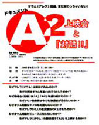
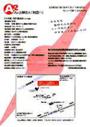

|
前略
ずいぶんご無沙汰だね。その後如何ですか？ 順子のことだから、相変わらず忙しく日々を過していることと思います。
窓の外は三千院の濃い木々の緑。早朝なのに蝉の声が凄い。今、京都のホテルの一室でキーボードに向っています。京都造形芸術大学に呼ばれて、夏季集中講座の講師ということで、昨日から滞在しています。
肩書きに「映画監督」と記載されることが多くなったけど、僕の場合は映画そのものでの収入はまったくないし、活字のほうも、とにかくノンフィクションは売れないジャンルだし、ということで、日銭を稼ぐために、最近はこんなことばかりしています。「名選手必ずしも名監督には非ず」という格言を引き合いにすると、何だか僕が名選手のようになってしまって僭越だけど、人前で喋ったり映画論や制作論を教えたりという能力が、映像を演出する才能とパラレルのわけはもちろんない。そもそも映画なんて観るものか創るもので、教えたり教わったりするものじゃない（でもまあ、そんなことを言い出すと、芸大そのものの存在価値も怪しくなってしまうけど）。
教壇や講演台の上に立ちながら、実のところは恥かしくて居たたまれなくて仕方がない。ドキュメンタリーを作るという行為は、人の営みの延長だと思っている。その意味では人に優劣などないように作品にも絶対的な優劣などない。でも教育とはその優劣を前提にするわけで、ドキュメンタリーを教えるという行為は明らかに矛盾している。もちろん最低限の技術などを教えることはできるけど、僕はテクニックでいえばたぶん水準以下の作り手だ。いい気になるなよと陰では言われているだろうなとは思いながらも、でも実は、今の自分にとってこういう仕事が何よりも大きな生活の糧であることもまた事実です。
肩書きについては今も問われれば、「ディレクター・映画監督と書いてください」という言い方をしているけど、考えたら最後にテレビの仕事をしてからもう一年が過ぎた。要するにまる一年間テレビからは遠ざかっているし、今後もテレビの仕事をする予定は今のところ何もない。テレビ・ディレクターと自称することはそろそろ無理があるのかなとは思いながらも、監督ですと言い切ることは今もどうしてもできない。それによって生計を立てるというプロフェッショナル本来の定義から言えば、二本の映画を作ったとはいえ、僕はプロの監督とはとても言えないのだから。
子供の入学とかいろいろ、職業欄を書かなければいけないことはたまにある。その度にいつも、ボールペンを手に煩悶してしまう。プロという意味では、テレビディレクターでもないし映画監督でもないし、ノンフィクション作家でもない。要するにフリーターなんだとこの間気づいたけど、やっぱり子供の入学願書にこれはちょっと記載しづらい。
まだ地方での興行は続いているけど、『Ａ２』の動員が、『Ａ』とほとんど変わらないことは、やっぱり僕にとってはショックでした。３年前とはオウムに対しての国民感情も多少は変わってきているはずと予想していたし、何と言っても９・１１後のアメリカを対岸から眺めることで、日本人もいろいろ気づいてきたことがあるはずだと思っていたけど、公開が始まってから数ヶ月経過した今、自分のおめでたさをつくづく実感している。とにかく観に来てもらえない。「何でわざわざ金を払ってオウムのドキュメンタリーなんか観なくちゃならないんだよ」という声を聞いた。被写体は確かにオウムだけど、テーマは今僕らが生きている日本社会そのものなんですと幾ら説明しても伝わらない。
観てくれた人の手ごたえは相変わらず強い。それは自信がある。でも広がらない。「職場の映画好きの友人たちを何度も誘ったのに、洗脳されそうで怖いって誰も一緒に来てくれないんです」と観客の一人に訴えられた。訴えられても僕も溜息をつくばかりだ。
七年が過ぎて、オウムに対しての興味は失せたけど、嫌悪だけはリアルなまま残ってしまったということなのかもしれない。『Ａ』は福田和也さんに、「高名だが誰も観ていない映画」と称されたけど、『Ａ２』に於いて事態がより深刻になるとは夢にも思わなかった。
メディアについていえば、新聞・雑誌などの活字媒体はとても熱心に応援してくれたけど、なぜか動員にはなかなか結びつかない。テレビについては、取材に来るという話が二つあったけど、ひとつは話だけでそれっきりナシの礫で、もうひとつは、何度かカメラクルーが取材に来たのだけど、局のデスクだかプロデューサーとかが、「森という男はオウム幹部みたいな存在なのに、うちの番組に出演させるなんてとんでもない」と反対したとかで、異例の打ち切り。さすがにこれには少し驚いたけど、例によってこのプロデューサーだかデスクだかは、作品を観ていない。
とにかくいちばん観て欲しいマスメディアの人たちが、足を運んでくれない。もちろん３年前、『Ａ』を観たことがきっかけになって、ＮＨＫを辞めて自分の活動を始めた順子のように、観ていろいろ考えてくれる人は確かに大勢いるけれど、でもメディア全般のパイを考えたらほんの一部。始めて会うメディアの人のほとんどからは、「申し訳ないんですが、行こう行こうと思いながら見逃しているんですよ。次回はきっと観ます」などと言われるけど、こういう人はたぶんこれからも、絶対に観ない。
とにかく幾ら作品を作っても、皆が観に来てくれないのなら作る意味などない。ビデオ会社からはずっと黙殺されているし（正確には黙殺じゃない。ビデオ化やＤＶＤという話は大手からも実は頻繁に来るのだけど、皆途中で上司が反対したとかの理由で立ち消えになってしまう。例によってこの上司は作品を観ていない）。
誰かに「数十年後にはこの作品の価値に皆が気づきますよ」と慰められたけど、でも仮に結果そうなったとしても、言うまでもなく僕には何の意味もないし、作品の本来の在り方としてはあるべき姿じゃない。だって今のこの社会のテンポを考えたら、たとえ十年後でもきっと手遅れだ。日本に居住するすべての人に、自分たちの「今の姿」を等身大に見て欲しいと思って、僕はこの映画を作ったのだから。
プロデューサーの安岡卓治からは、「そろそろ『Ａ３』の準備を始めないと、来年の山形国際ドキュメンタリー映画祭に間に合わないぞ」と会うたびに半分冗談めかして言われるけど、でも僕がもうそんな心境にはなれないことは、たぶん彼も本当は察しているだろうな。僕はこうして愚痴ばかり言っているけど（たぶんプロデューサーとして、もっと辛い思いをしているはずなのに）、彼は決して弱音を吐かない。
作り、そして観られることで映画が成立するのなら、僕の中では『Ａ』や『Ａ２』はまだ終っていない。『Ａ３』に取り掛かるかどうかという問題よりも、もう少し『Ａ』や『Ａ２』の上映活動に力を入れたい。それと本音で言えば、ドキュメンタリーはやっぱりきつい。フィクションとノンフィクションの間には、手法や技術といったレベルでの違いはあっても、本質は変わらないと思っているけど、やっぱり俳優ではなく生身の人を被写体にするドキュメンタリーは、他者を加害する要素が強い分だけ自らへの毒も強い。生半可なテンションや目的意識じゃカメラは担げない。
順子の中で今、「下山事件」はどんな位置を占めているのだろう？ 大阪で『Ａ』を観て、わざわざ奈良から僕と安岡に会うために上京してきた君と何度か会った頃、ＮＨＫを退職しますと唐突に報告されて、自分の作品が君の決意のきっかけになったことに内心はかなり狼狽した。「早まらないほうがいいよ」などと説得しながら、半世紀以上前に起きた事件をドキュメンタリーとして作品化する手法が見つからなくて煩悶していた僕は、「この娘を被写体にしよう」と同時に考えていた。
半世紀前の国家の謀略と、日本の重大なターニングポイントとなった一つの事件を解明する過程に、戦後が終わり高度成長期が終わりバブルが弾け、あらゆることが終わって曖昧な過渡期を迎える今の日本に生きる君を、フィルターにしてドキュメンタリーとして再構築するという発想は、絶対間違っていないはずだと今も確信している。でもドキュメンタリーの毒と、『Ａ２』公開後の焦燥で、今の僕がすっかりシオシオのパーでいることはまた事実だ。
撮影が中断して二年が過ぎて、今の順子の中で、当時のテンションが維持されているはずはない。そりゃそうだよな。普通はこれだけ時間が空けば、被写体としてのテンションは下がりきって当然だよね。
僕の中では今も、下山事件というモチーフの位置は変わっていない。今の日本を考えるうえで、何よりも重要で示唆に溢れた事件だと思う。過去形ではなく現在形で捉えるべき事件だと思う。ただ、前述したように映像という作業を今後も自分がこれまでと同じように継続できるかどうかはちょっと自信がない。時間が経てばまた充填できるのかどうか、今のところは分からないというのが本音です。
書きながら、所詮は自主制作のドキュメンタリーなんだから、今の動員で満足すべきなのかなとも思い始めている。誰だって自分の作品は傑作だってひそかに思っている。動員がはかばかしくないからといってマーケットを詰るのは筋違いだろう。要するに作品の力がないということだ。僕の力はその程度だったいうことだ。決して自虐ではなく、そう思ったほうが気分的にはずっと楽になる。決して撮らないと言い続けながら結局『Ａ２』はできてしまったし、『Ａ３』もふと撮り始める可能性だってあるかもしれない。
下山事件の作品化については、少し無理をしすぎていたのかもしれないな。順子に見透かされたくないという気持ちや、一方的に巻き込まれながら懸命にサポートしてくれた安さんに申し訳ないなという気持ちとか、いろいろ錯綜して僕も行く末を見失ってきたけど、このあたりで一回、これまでの経緯も含めて形にしようかなと思っています。形といっても撮影を再開するとかこれまでの素材を編集するとかの具体的な意味じゃなく、気持ちの中でずっと不定形だったものの輪郭を定めようということだけど。
近いうちに会えますか？ 今月半ばに帰京します。いつのまにか午前８時を過ぎている。今日の京都の予想最高気温は３６度。そろそろ学校に行かなくてはいけない時間です。今回の集中講座の講師は僕と市川猿之助さんの二人。僕のゼミの学生たちは、自由選択なのに天下の猿之助より僕を選んだ奇特な人たちです。何か実習をさせて欲しいと要請されて、「自分が好きなもの（人・モノ・概念など何でも良い）の中で嫌いなところ」を十分以内の映像作品にするように」と課題を与えたら、一人の学生から飼っているカブトムシを燃やすというプランを明かされて、正直言って困惑しています。作品のためには徹底してエゴイスティックになれと普段から口走っているのに、殺させたくないという本音はどうしても払拭できなくて、昨夜からずっと悶々としています。たまたま教室にいたドキュメンタリー監督の佐藤真さんが、さすがに見かねたのか「カブトムシじゃなくてゴキブリにしたら？」と提案してくれたけど、学生からは「それじゃ意味がないです」とあっさりと却下されてしまった。
昨夜はホテルの部屋で、原爆についてのＮＨＫスペシャルを観ながら、瓦礫の下敷きになって生きながら焼かれた子供の話に泣きそうになった。カブトムシを燃やさせるべきかどうか、この程度で狼狽して答えを出せない自分に呆れています。ゴキブリならば罪の意識が軽くなる自分の矛盾に嘆息しています。１０日に帰京します。９月に入ると『Ａ２』のアメリカ興行などで忙しいけど、８月後半は比較的空いています。
草々
８月７日早朝 森達也拝
追伸
２４日に世田谷のオウム施設前で『Ａ２』の野外上映会があります。実はこれ、テレ朝の磯貝陽悟さんや岩本太郎さん、安さんたちが実行委員会として計画していて、しょっちゅう東京を離れているせいなのか、それとも実務能力がないと思われたのか、僕には連絡がないので、詳細がよくわからない。世田谷の住民グループや『Ａ２』の被写体になった藤岡の住民たち、横浜の右翼の方々やアレフの幹部、河野義之さんや宮台真司さん、それに鈴木邦男さんなどが集まるみたい。当日は僕も楽しむつもりで参加します。以下にチラシの概要を貼っておきます。
 
|